売り込みの前に、
お断りの仕方からお伝えします。
ホームページの話は、頼んでから「思っていたものと違う」となりやすいものです。そうならないように、こちらが先に約束していることを最初に並べておきます。
見てから、お断りいただけます
叩き台の制作とご提案は無料です。正式にご依頼いただくまで、費用は一切かかりません。お断りの場合は、おつくりした叩き台のデータも削除します。
お支払いは、納品のあとです
前金はいただきません。完成したホームページを実際にご確認いただいてから、銀行振込または現金で一括のお支払いです。
違約金は、ありません
月額の保守はいつでも解約できます。最低契約期間も、解約にともなう費用もいただきません。
やめても、ホームページはお店のものです
解約されるときは、サイトのデータを一式お渡しします。ドメイン(インターネット上の住所)はお店の名義で取得しますので、そのままご自身や他の会社で使い続けられます。保守契約書にも明記しています。
しつこい営業は、いたしません
一度お断りいただいたお店に、何度もお伺いすることはありません。ご検討の時間が必要な場合は、こちらからは追いかけずにお待ちします。
この5つは、口約束ではなく契約書に書いてあることです。ご契約前に、契約書のひな形をそのままお渡ししてお読みいただけます。
同じ形のものは、
ひとつもありません。
これまでにおつくりした101軒です。決まった型に写真と名前を差し替えたものではなく、業態・価格帯・お店の雰囲気に合わせて、一軒ずつ設計しています。いずれもご契約前のお店で、まずはこの状態までお作りしてお持ちしています。
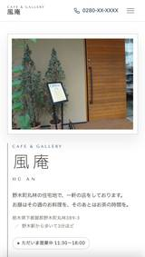
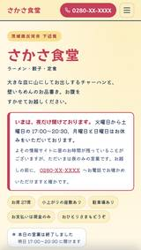
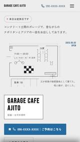
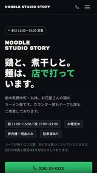
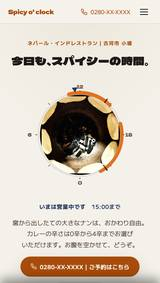
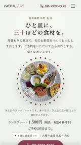
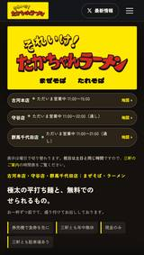
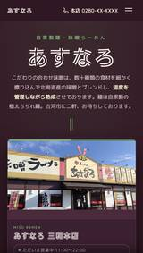
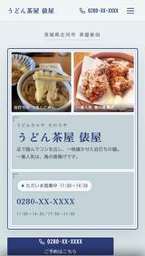
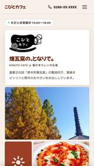
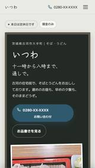
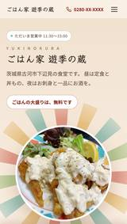

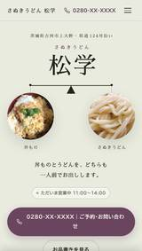
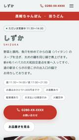


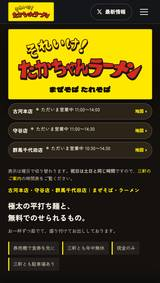
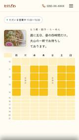
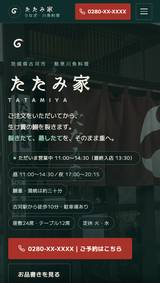
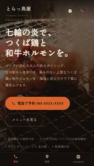
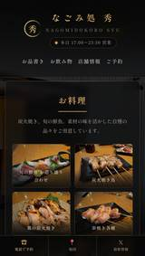
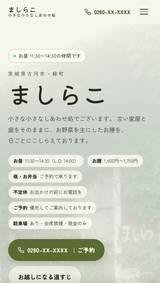
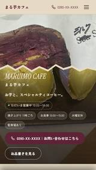
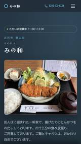
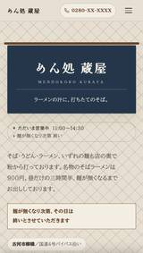
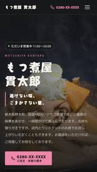
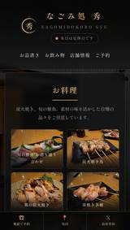
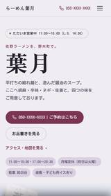
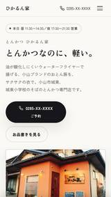
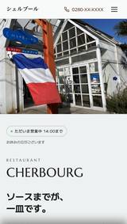

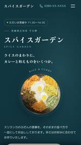
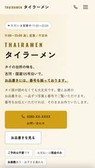
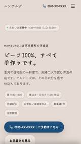
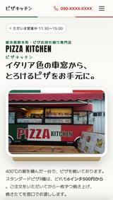
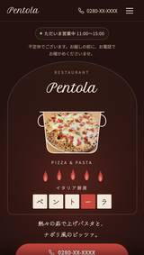
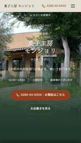
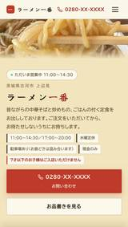
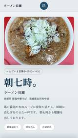
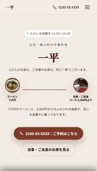

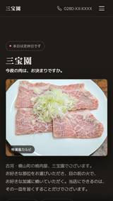
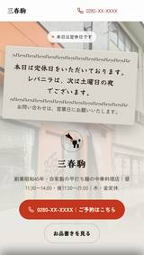
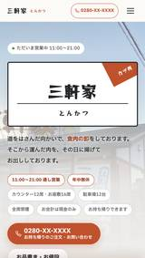
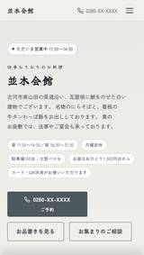
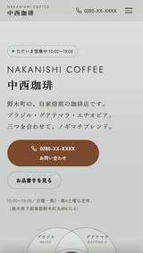
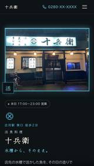
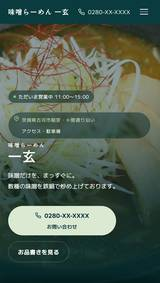
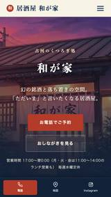
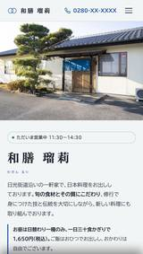
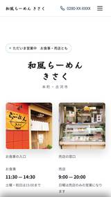


カフェ・ハンバーガー・スイーツ／ギャラリー併設のカフェ／カフェ／ガレージカフェ／自家製麺のラーメン／ネパール・インド料理／予約制のカフェ／洋風居酒屋／味噌ラーメン／手打ちうどん／カフェ・窯焼きピッツァ／炭火串焼／定食・海鮮丼／ラーメン・餃子／さぬきうどん／長崎ちゃんぽん・皿うどん／生姜らーめん／日本そば／そば／まぜそば／もつ煮・餃子・らーめん／うなぎ・川魚／炭火ダイニング／和食・炭火／古民家の和食／焼き芋専門店／とんかつ／ラーメン／もつ煮・お弁当／そばと創作料理／ラーメン・つけ麺／佐野らーめん／和食・おにぎり／イタリアン／フレンチ／ステーキ／ステーキ・ハンバーグ／スリランカ料理／タイ料理／珈琲と洋菓子／ハンバーグ・洋食／窯焼きピザ／洋菓子店／町中華／背脂中華そば／中華料理・会席／手打ちそば・うどん／焼肉／中華料理／そば・お定食／和洋中の食堂・ご宴会／自家焙煎の珈琲／天丼・和食／居酒屋・食べ放題／活魚料理・割烹／味噌らーめん／居酒屋／日本料理・会席／和風らーめん・お土産／中華・ラーメン／大箱居酒屋・ご宴会／手打ちそば／寿司／大衆食堂／四川料理／パン／家系ラーメン／洋食・オムライス／海鮮居酒屋／炭火焼き／炭火焼肉／武蔵野うどん／寿司・出前／串焼き／手打そば・天丼／定食・居酒屋／日本料理・定食／そば・地酒／タンメン／鮮魚・釜めし／炉端焼き／麦とろ・和食／鶏白湯らーめん・つけめん
※ 1枚がひとつのお店のホームページです（101軒・83業態）。お店のお名前は伏せ、お電話番号も画面上で伏せています。
101軒ぶんの、101とおりの色
それぞれのホームページで使っている色です。上の面が地の色、下の帯がアクセントの色。看板の色、器の色、店内の照明の色から起こしているので、同じ組み合わせは出てきません。「型を使っていない」というのは、つまりこういうことです。
文福飯店
国道沿いの平屋に立つ、昼だけの食堂。色あせた屋根看板のえび茶をそのまま画面の主色に据え、中華そばもとんかつもオムライスも一軒でそろうことを伝える構成。
食彩厨房 魚かつ
漁港から届く天然の旬魚と十三種の釜めしが看板。藍と生成りの落ち着いた配色で、昼の定食と夜の座敷宴会というふたつの顔を並べて見せる構成。
Cafe 5438 Ocha-Nova
一杯ずつラテアートを描くカフェ。白い壁と木の床の空気をそのまま余白に移し、ひとりでも入りやすい雰囲気を伝える構成。
色は、その店の
どこかに必ずあります。
上の「文福飯店」を例に、一軒ぶんの叩き台がどうやってできるかをお見せします。
最初にするのは、デザインを考えることではありません。食べログ・Googleマップ・ホットペッパー、そのお店のSNSまで、公開されているものを一通り読みます。何が名物で、どの時間に人が入っていて、お客様が何を書き残しているのか。ここに一番時間をかけます。
文福飯店は、国道沿いの平屋の食堂でした。写真の中でいちばん目を引いたのは料理ではなく、屋根の上の看板です。長く陽に灼けて色の落ちた、えび茶色の大きな看板。この店の前を通ったことがある人なら、まずこれを覚えているはずだと思いました。
そこで、その看板の色をそのまま画面の地の色にしました。写真から色を拾い、少しだけ沈めて文字が読める明るさに調整したものが下の3色です。新しく決めた色ではなく、もともとお店にあった色です。
左から、地の色・一段明るい面・文字の色。屋根看板と、店内の壁から取っています。
構成で迷ったのは、何の店として見せるかでした。中華そばもとんかつもオムライスもある。ふつうは「これ一本」に絞るほうがきれいにまとまりますが、この店の場合はそこが値打ちです。一軒でぜんぶそろうことが伝わるように、あえて絞らず並べました。昼だけの営業であることも、探して来られた方が困らないよう最初の画面に置いています。
ここまでで、お店にお声がけする前の状態です。お会いしたあとは、実際のメニューや値段、写真を伺いながら直していきます。
掲載ページを探す
食べログ・Googleマップ・ホットペッパーを必ず見て、住所と電話番号が一致することを確かめます。同じ名前の別のお店と取り違えないためです。
写真をそろえる
掲載されている写真とお店のSNSから、使えるものを集めます。同じ写真が1ページに二度出ないように確認します。
色と文字を決める
看板・器・照明から色を起こします。書体もお店の雰囲気に合わせて選びます。
組み立てる
スマートフォンで見たときを基準に組みます。飲食店をお探しの方は、ほとんどが携帯電話でご覧になるためです。
見直す
お店の立場・お客様の立場・デザインの3方向から見直して直します。ここで直すのは毎回20か所ほどです。
グルメサイトは出会いの場、
自社ページは決め手の場。
食べログもGoogleマップも、お客様との大切な接点です。やめる必要はありません。ただ、そこは「あなたのお店のページ」ではなく「みんなの検索結果」です。役割が違います。
すぐ隣に、競合店が並ぶ
検索結果ではライバル店と常に横並びです。せっかく見つけてもらっても、評価の数字だけで比較されて他店に流れてしまうことがあります。
広告が他店へ誘導する
店名で検索したお客様の画面にも、他店の広告が表示されます。自分のお店のページのはずが、他店への入り口にもなっています。
見せ方のかたちが決まっている
載せられる写真や文章の型が決まっていて、内装のこだわりや店主の想いまでは届きません。どのお店も同じ見た目になります。
※ 画面はイメージです。掲載店舗は架空のものです。
指名検索の受け皿になる
店名で検索してくれたお客様を、他店の広告が一切ない自分のページで迎えられます。一度来てくれたお客様との再会の場所にもなります。
お店の世界観をそのまま出せる
写真の大きさも、お品書きの見せ方も、言葉づかいも自由です。カウンターに座ったときの空気感まで伝わるページをつくれます。
情報をいつでも最新にできる
営業時間の変更、季節のメニュー、臨時休業のお知らせもすぐに反映します。Googleビジネスプロフィールと連携し、地図検索からの導線も整えます。
ご予約の入り口を一本にできる
お電話・ネット予約・LINEなど、すでにお使いの窓口へまとめてご案内します。お客様が迷わずに予約までたどり着けます。
かかる費用は、
初期費用と月額のふたつだけ。
- お店の世界観に合わせたオリジナルデザイン
- お品書き・こだわり紹介などのページも込み
- スマートフォン対応
- 電話予約・地図への導線設計
- スマホでの写真撮影も無料でお手伝い
- ドメイン取得・公開作業の代行
- 正式なご依頼から1週間以内に公開
- ホームページの書き換えに月1回まで対応
(営業時間・価格の修正、写真の差し替え、お知らせの掲載など) - Googleビジネスプロフィールの運用
(写真の追加・最新情報の投稿・営業時間や臨時休業の手入れを毎月こちらから) - クチコミへの返信文の作成
- 月に一度の数字のご報告
(地図の表示回数・電話番号のタップ数・ルート検索数・サイトの閲覧数) - サーバー・ドメインの管理／表示トラブル時の対応
- いつでも解約OK(違約金なし)
※ お支払いは、納品時に初期費用を一括(銀行振込・現金)、公開後は月額費用のみ。
※ 月1回を超える変更は1回3,000円〜。ページの追加や大きなリニューアルは、内容に応じて別途お見積りいたします。
※ 月額は、運用をお預かりするお店1店舗につき5,000円です。1つのサイトに複数のお店を載せる場合も、初期費用はサイト1本ぶんのままで、月額だけが店舗数ぶんとなります。
※ 月額5,000円ほどの保守は、サーバーとドメインを維持するだけで更新の代行が付かないことが一般的です(出典: whitch.jp／PRONIアイミツ)。当方は月1回の書き換えに加え、Googleビジネスプロフィールの運用・クチコミ返信文・月次のご報告を含みます。
※ Googleビジネスプロフィールの作業には、お店のGoogleの画面から「管理者」としてご招待いただく手続き(1回だけ)が必要です。オーナー権限まではお預かりしません。
※ これらは、お店を見つけていただきやすい状態に保つための作業です。検索の順位や、来店されるお客様の数をお約束するものではありません。
標準で対応できること(料金内)
- ネット予約ページへのリンク設置
(食べログ・ホットペッパー・LINEなど) - 電話をタップでかけられる予約導線
- Googleマップの埋め込み
- InstagramなどSNSへの導線
- テイクアウト・季節メニュー・お知らせの掲載
- Googleビジネスプロフィール(Googleマップのお店の欄)の初期整備
別途ご相談で対応できること
- 英語などの多言語ページ
まず完成イメージをお見せします。
決めるのは、見てからで大丈夫。
「どんなものができるか分からないまま契約する」不安をなくすため、creative works+ では先にホームページの叩き台をおつくりしてからご提案します。
叩き台のホームページを制作
食べログやGoogleに公開されている情報・写真をもとに、お店のホームページの叩き台を先におつくりします。この時点で費用はかかりません。
この叩き台は検索に出さない設定にしてあり、URLをお渡しした方以外はご覧になれません。正式に公開するときは、お店からお預かりした写真や、こちらで撮影した写真に差し替えます。
実際の画面をご覧いただく
完成イメージをその場でスマートフォンやパソコンの画面でご確認ください。叩き台は非公開のプレビューで、正式な公開はお店の許可をいただいてから。ピンとこなければ、お断りいただいて構いません。
一緒に最終調整
ご依頼をいただいたら、メニューや写真、営業時間、お店のこだわりを伺いながら、叩き台を「本当のお店の顔」に仕上げていきます。写真が足りない分は、スマホでの撮影もその場でお手伝いします。
公開ご依頼から1週間以内
ドメインの取得から公開作業まで、むずかしいことはすべて代行します。パソコンが苦手でも大丈夫です。
運用サポート
公開後は月額保守で伴走します。営業時間の変更やメニューの入れ替えなど、軽微な修正は月1回まで対応します。
気になることは、
ここでもお答えします。
パソコンが苦手でも、持てますか?
はい。制作も公開後の更新も、こちらで代行できます。オーナー様にお願いするのは「お店のことを話していただくこと」だけです。
食べログやGoogleはやめたほうがいいのでしょうか?
いいえ、併用がおすすめです。ポータルは「新しいお客様との出会いの場」、自社ホームページは「お店を選んでもらう決め手」。役割が違います。
完成までどのくらいかかりますか?
正式にご依頼いただいてから、1週間以内の公開が目安です。先に叩き台ができているので、短期間で仕上がります。
制作後の費用はかかりますか?
月額5,000円(税込)のみです。含まれるのは次の4つです。①ホームページの書き換え(営業時間やメニューの変更など・月1回まで)、②Googleビジネスプロフィール(Googleマップに出るお店の欄)の運用——写真の追加・最新情報の投稿・営業時間や臨時休業の手入れを毎月こちらから行います、③クチコミへの返信文の作成、④月に一度の数字のご報告(地図の表示回数・電話番号のタップ数・ルート検索数・サイトの閲覧数)。②〜④はご依頼がない月もこちらから毎月行います。このほかサーバー・ドメインの管理も含みます。月1回を超える書き換えは1回3,000円〜、ページの追加や大きなリニューアルは別途お見積りです。なお、これらは見つけていただきやすい状態に保つための作業であり、検索の順位や来店されるお客様の数をお約束するものではありません。
支払い方法を教えてください。
銀行振込または現金で、納品時に一括でお支払いいただきます。完成したホームページを実際にご確認いただいてからのお支払いなので、安心です。
ネット予約やSNSとの連携はできますか?
すでにお使いの予約ページ(食べログ・ホットペッパー・LINEなど)へのリンク設置、Googleマップ、InstagramなどSNSへの導線づくりは標準で対応します。英語などの多言語ページは、内容に応じて別途ご相談ください。
うちの写真を、断りなく使われるのですか?
叩き台の段階では、食べログやGoogleに公開されている写真を仮に置かせていただいています。ただしこの叩き台は検索に出さない設定にしてあり、URLをお渡しした方以外はご覧になれません。正式に公開するときは、お店からお預かりした写真や、こちらで撮影した写真(撮影は無料でお手伝いします)にすべて差し替えますので、よそのページの写真がお店のホームページに残ることはありません。ご不要とのことでしたら、公開しないまま終わります。
制作事例のお店は、お客さんなのですか?
いいえ。掲載しているものは、いずれもご契約前におつくりした叩き台です。まずこの状態までお作りしてお持ちする、というやり方をしているためで、お取引のあるお店という意味ではありません。
運営者情報
- 屋号
- creative works+(クリエイティブ ワークス プラス)
- 代表
- 丸藤 啓太
- 拠点
- 茨城県
- 事業内容
- 飲食店・小規模事業者向けホームページの制作・運用
- 連絡先
- 公式LINE、または creativeworks.plus@gmail.com
(24時間以内にお返事します) - お支払い
- 銀行振込・現金(納品時に一括)
まずは、あなたのお店の
完成イメージを見てみませんか。
食べログやGoogleの情報をもとに、ホームページの叩き台を無料でおつくりします。続けるかどうかは、実物を見てから決めてください。しつこい営業はいたしません。
メールでのご相談も承ります —— creativeworks.plus@gmail.com